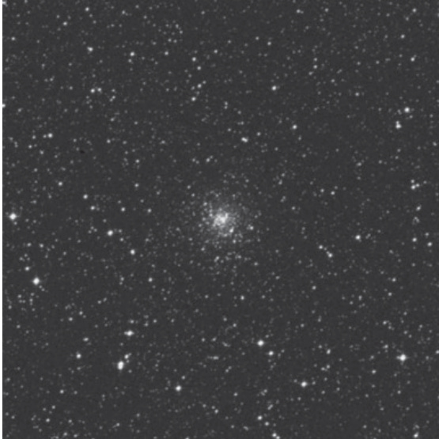

矩尺座阴阳双星 · Norma Yin-Yang Pair · NGC 5946 & NGC 5927

尽管我们看到的星体配对投影在看似二维的天幕上，但掌握天体的估算距离能助我们突破天球水晶壳的桎梏，在脑海中构建三维影像。
Although we see celestial pairings projected on what appears to be a two-dimensional sky, knowing the estimated distances of the objects helps us to break through the crystalline sphere and see them in our mind's eye in 3D.
接下来这对球状星团 NGC 5927 与 NGC 5946 便是绝佳范例——这对视觉上的阴阳双星位于 3.5 等星天秤座 ζ 星（ζ Lupi）东北偏东方约 3.5 度处。
Such is the dramatic case with our next two targets, globular star clusters NGC 5927 and NGC 5946 – a visual yin-yang pairing about 3.5 degrees east-northeast of 3.5-magnitude Zeta (ζ) Lupi.
"This is understandable, because NGC 5927 lies 25,100 light-years from the Sun and 15,000 light-years from the Galactic center, while NGC 5946 is nearly 10,000 light-years farther from us."
"这一差异不难理解：NGC 5927 距太阳 25,100 光年，离银心 15,000 光年；而 NGC 5946 距离我们还要远近 10,000 光年。"
阴阳视方位在低倍视场中尤为明显。NGC 5927 是一个直径 12 角分的明亮光球，而 NGC 5946 则是位于其东侧约 1 角分处更小更暗的光斑。
The yin-yang aspect becomes evident in a low-power field of view. While NGC 5927 is a pretty globe of light 12' across, NGC 5946 is a much smaller and dimmer patch of light about 1' to the east.
观测参数表 | Observation Parameters
| 参数 | English | 值 | Value |
|---|---|---|---|
| NGC 5927 | |||
| 类型 | Type | 球状星团 | Globular Cluster |
| 星座 | Constellation | 矩尺座 | Norma |
| 视星等 | Magnitude | 8.9 | 8.9 |
| 视直径 | Apparent Diameter | 12' | 12' |
| 距离 | Distance | ~25,100 光年 | ~25,100 light-years |
| 金属丰度 | Metallicity | 富金属 | Metal-rich |
| NGC 5946 | |||
| 类型 | Type | 球状星团 | Globular Cluster |
| 星座 | Constellation | 矩尺座 | Norma |
| 视星等 | Magnitude | 9.5 | 9.5 |
| 视直径 | Apparent Diameter | 3' | 3' |
| 距离 | Distance | ~34,600 光年 | ~34,600 light-years |
| 金属丰度 | Metallicity | 中等金属 | Medium-metallicity |
发现历程 | Discovery
邓洛普于 1826 年 5 月 8 日发现了这两个球状星团。然而，澳大利亚天文学家格伦·科曾斯在邓洛普的手写笔记中发现了对 NGC 5946 的描述，这些笔记并未收录于其 1828 年星表中。
Dunlop discovered both globulars on May 8, 1826. Australian astronomer Glen Cozens, however, found NGC 5946 described in Dunlop's handwritten notes, which were not included in his 1828 catalogue.
"Even John Herschel's impression of NGC 5946 through his 18-inch speculum-metal-mirror telescope was 'not very bright.'"
"就连约翰·赫歇尔通过 18 英寸镜齐金属反射望远镜观测 NGC 5946 时，留下的印象也是'亮度不高'。"
星团特性 | Cluster Characteristics
位于低银纬的球状星团因星际尘埃的干涉和前景恒星的污染而难以研究，NGC 5927 和 NGC 5946 均受此影响。
Globular clusters that lie at low galactic latitudes are difficult to study owing to the interference by intervening dust and the contamination of foreground stars. Both NGC 5927 and NGC 5946 suffer from these effects.
加拿大维多利亚自治领天体物理台（DAO）的艾琳·D·弗里尔与智利拉塞雷纳托洛洛山泛美天文台的道格·盖斯勒在 1991 年《天文学报》发表的论文中指出，该星团存在清晰可辨的巨星与亚巨星分支。
A study by Eileen D. Friel (Dominion Astrophysical Observatory, Victoria, Canada) and Doug Geisler (Cerro Tololo InterAmerican Observatory, La Serena, Chile) in a 1991 paper in Astronomical Journal also revealed that the cluster has well-defined giant and subgiant branches.
"Their photometry for more than 100 giants in the cluster led to the determination that NGC 5927 is metal-rich, with each star in the cluster having about as much metal as the Sun."
"他们对星团内百余颗巨星开展的测光研究表明，NGC 5927 属于富金属星团，其中每颗恒星的金属含量均与太阳相当。"
近期，劳拉·K·富尔顿（空间望远镜研究所）及其团队公布了 NGC 5927 的哈勃空间望远镜测光数据，表明该星团比已知年龄的其他盘族球状星团更为年轻。
More recently, Laura K. Fullton (Space Telescope Science Institute) and her colleagues presented Hubble Space Telescope photometry of NGC 5927 that indicates that the cluster is somewhat younger than other disk globular clusters with known ages.
"Comparison of the seven known thick disk globular clusters that have estimated ages with ages of globulars that belong to the halo reveals a significant overlap in age between the two cluster systems."
"将七颗已测定年龄的厚盘球状星团与银晕星团的年龄进行对比，可发现两类星团系统的年龄存在显著重叠。"
观测体验 | Observing Experience
当夜幕降临，南天矩尺座缓缓升至最佳观测位置时，双筒镜或小型天文望远镜的低倍视野中，这对阴阳双星便如两颗漂浮在深空中的珍珠，静静等待着你的目光。
As night falls and Norma rises to its optimal observing position in the southern sky, a pair of binoculars or small telescope at low power reveals this yin-yang duo like two pearls floating in the deep cosmos, quietly awaiting your gaze.
先映入眼帘的是较大较亮的 NGC 5927——它的光芒柔和而绵密，中央亮度渐增，如同一盏燃烧的灯笼悬挂在漆黑的天幕上。随着放大倍率的提升，这团光芒逐渐分解成无数细碎的星点，仿佛有人向深空中撒了一把钻石粉。
The first to catch your eye is the larger, brighter NGC 5927 — its light soft and dense, gradually brightening toward the center like a burning lantern suspended on the dark canvas of night. As you increase magnification,
🔒 受限于篇幅，本文仅展示部分样章。O'Meara 先生完整的观测手记、实测数据及未公开的独家配图，请参阅原著双语典藏版。
👉 立即在闲鱼获取《DEEP-SKY COMPANIONS》中英双语高清典藏版